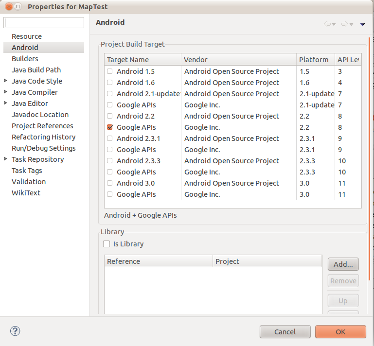

本著作係採用創用 CC 「姓名標示 2.5 台灣版」授權條款釋出。
Home
本著作係採用創用 CC 「姓名標示 2.5 台灣版」授權條款釋出。
Home
為了好玩而玩Android。從Android SDK開始，今年希望可以學到NDK...
安裝之前有幾個要注意的
terence@terence-Latitude-E6410:~/local/android-sdk-linux_x86/platform-tools$ sudo ./adb start-server
* daemon not running. starting it now on port 5037 *
* daemon started successfully *
terence@terence-Latitude-E6410:~/local/android-sdk-linux_x86/platform-tools$ ./adb devices
List of devices attached
HT12DPL02556 device
terence@terence-Latitude-E6410:~/local/android-sdk-linux_x86/platform-tools$ ./adb install ~/tmp/HelloAndroid.apk
238 KB/s (13094 bytes in 0.053s)
pkg: /data/local/tmp/HelloAndroid.apk
Success
terence@terence-Latitude-E6410:~/local/android-sdk-linux_x86/platform-tools$ ./adb uninstall org.example.hello
Success
如果沒有用root權限啟動server，在adb start-server、adb devices或adb install的時候會遇到no permission的錯誤，此時就先使用adb kill-server殺掉已經啟動的server之後，在用root權限重新啟動server。
使用上面那條啟動server之後，也可以透過ADT在想要佈署的project上，按右鍵Run As > Android Application就可以看到ADT會把程式佈署到手機上面。
./adb push /home/terence/tmp/sample-android/code/samplevideo.3gp /sdcard/samplevideo.3gp
Ref 1.在第五章有註明，雖然範例是把檔案放到/data，但是在手機上這個目錄是被保護的。因此要如第六章提到的放到sd card。然後第五章的VideoView的程式就可以改寫成由sd card找那個檔案來播放。
要在自己的寫的android程式使用google api，先使用android-sdk-linux_x86/tools/android安裝Google API，如下圖選好要安裝版本的Google API即可
接著就是在eclipse create android project的時候或者在exist project的properties選擇你要得Google API版本。剩下來的就跟書本上講的一樣在uses-library用com.google.android.maps和可以在layout裡面使用com.google.android.maps.MapView、可以建立MapActivity...等。
另外，還有一點要注意的就是signed APK使用的keystore要和申請Google API丟進去的MD5同一個唷，不然會不能用。